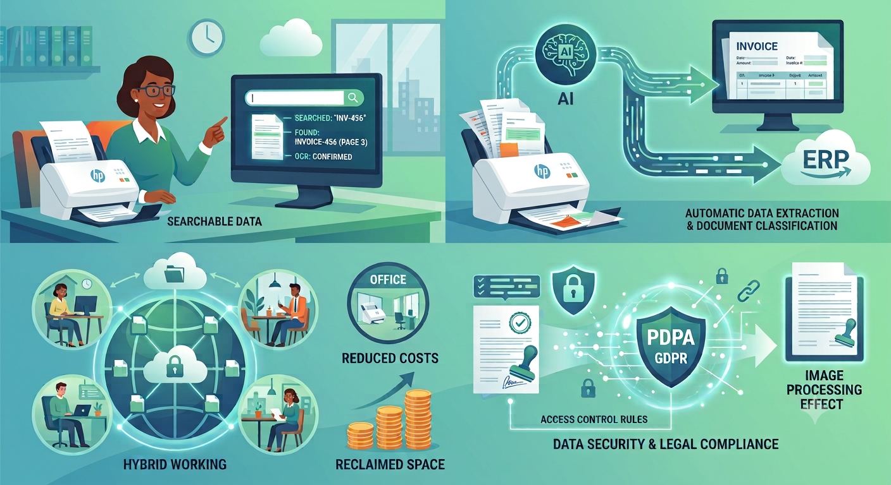

ทำไมองค์กรถึงต้องมีเครื่องสแกนเอกสารเฉพาะทาง
หากพูดถึงการเปลี่ยนเอกสารกระดาษให้เป็นไฟล์ดิจิทัล (Digitization) หลายคนอาจคิดว่าการใช้เครื่องถ่ายเอกสารมัลติฟังก์ชัน (MFP) หรือการใช้กล้องสมาร์ตโฟนถ่ายรูปก็เพียงพอแล้ว แต่ทำไมองค์กรที่ต้องการประสิทธิภาพและกำลังก้าวไปสู่ยุค e-Document อย่างเต็มรูปแบบ ถึงยังจำเป็นต้องใช้เครื่องสแกนเนอร์เฉพาะทาง (Dedicated Scanner) นี่คือเหตุผลสำคัญในมุมของผลลัพธ์เชิงธุรกิจและประสิทธิภาพการทำงาน

สแกนเนอร์ช่วยให้ข้อมูลในกระดาษกลายเป็นข้อมูลที่ใช้งานได้จริง
การสแกนด้วยเครื่องสแกนเฉพาะทาง ไม่ใช่แค่การได้ไฟล์ภาพทั่วไปที่ค้นหาไม่ได้ แต่มาพร้อมเทคโนโลยี OCR (Optical Character Recognition) ที่แปลงตัวอักษรบนกระดาษให้เป็นข้อความดิจิทัล ทำให้ได้ไฟล์ Searchable PDF ที่สามารถพิมพ์ค้นหาคีย์เวิร์ด เลขที่บิล หรือชื่อคู่ค้า แล้วเจอข้อมูลที่ต้องการได้ในไม่กี่วินาที ไม่ต้องเสียเวลาขุดจากแฟ้มเอกสาร
สแกนเนอร์ไม่ได้แค่ "ถ่ายรูป" กระดาษ — แต่ทำให้ข้อมูลในกระดาษ "ทำงานต่อได้" ในโลกดิจิทัล
สแกนเนอร์ยุคใหม่ทำงานร่วมกับซอฟต์แวร์อัจฉริยะ (AI / Dynamic Form Processing) ที่สามารถแยกประเภทเอกสาร (เช่น แยกบิลและสัญญาออกจากกัน) และดึงข้อมูลสำคัญ เช่น เลขที่เอกสาร วันที่ หรือจำนวนเงิน ออกมาได้โดยอัตโนมัติ เพื่อส่งต่อเข้าสู่ระบบ ERP หรือระบบบัญชีทันที ลดการคีย์ข้อมูลด้วยมือและลดความผิดพลาด (Human Error)
เอกสารกระดาษเสี่ยงต่อการถูกเปิดอ่านโดยผู้ไม่มีส่วนเกี่ยวข้อง แต่เอกสารดิจิทัลสามารถกำหนดสิทธิ์การเข้าถึง (Access Control) ได้อย่างละเอียด มีระบบบันทึกประวัติใช้งาน การเข้ารหัสไฟล์ (Encryption) และการสำรองข้อมูล (Backup) ที่ปลอดภัยและสอดคล้องกับมาตรฐานกฎหมาย PDPA
ภาพถ่ายจากมือถือมักเบี้ยว มีแสงสะท้อน หรือมีเงา ซึ่งไม่สามารถใช้เป็นหลักฐานทางกฎหมายหรือให้ AI อ่านข้อมูลต่อได้ แต่เครื่องสแกนเนอร์มีระบบ Image Processing อัตโนมัติ ช่วยปรับภาพให้ตรง ตัดขอบ ลบหน้าว่าง และเพิ่มความคมชัดของตัวอักษร ไฟล์ที่ได้จึงสะอาดและได้มาตรฐานสากล
เครื่องสแกนเนอร์เฉพาะทางถูกออกแบบมาเพื่อรองรับงานปริมาณมาก มีฟังก์ชัน Single-pass Duplex สแกนสองหน้าพร้อมกันในรอบเดียว และมีเซนเซอร์ Ultrasonic Double-feed Detection ตรวจจับกระดาษซ้อน มั่นใจได้ 100% ว่าไม่มีเอกสารหน้าไหนถูกสแกนข้าม หรือกระดาษติดจนงานสะดุด
เมื่อสแกนเอกสารเข้าระบบส่วนกลางแล้ว พนักงานทุกแผนกจะสามารถเปิดดูและใช้งานเอกสารชุดเดียวกันได้พร้อมกันจากทุกที่ ทุกเวลา ช่วยขับเคลื่อนการทำงานแบบ Hybrid และทำให้ธุรกิจดำเนินไปได้อย่างไร้รอยต่อ
การเปลี่ยนมาใช้ระบบดิจิทัลช่วยตัดต้นทุนแฝงที่มองไม่เห็น เช่น ค่ากระดาษ ค่าหมึกพิมพ์ ค่าจัดส่ง รวมถึงค่าแรงและเวลาของพนักงานที่ต้องหมดไปกับการจัดการกระดาษ ทำให้บุคลากรมีเวลาไปโฟกัสกับงานที่สร้างมูลค่าให้องค์กรได้มากขึ้น
เปลี่ยนเอกสารกระดาษที่เสี่ยงต่อการชำรุด สูญหาย หรือสำเนาซ้ำซ้อน ให้เป็นไฟล์ดิจิทัล ช่วยให้องค์กรไม่ต้องเสียพื้นที่วางตู้เอกสารรกๆ หรือเสียเงินเช่าคลังเก็บเอกสารภายนอก คืนพื้นที่ออฟฟิศให้กลับมาใช้ประโยชน์ได้อย่างเต็มที่